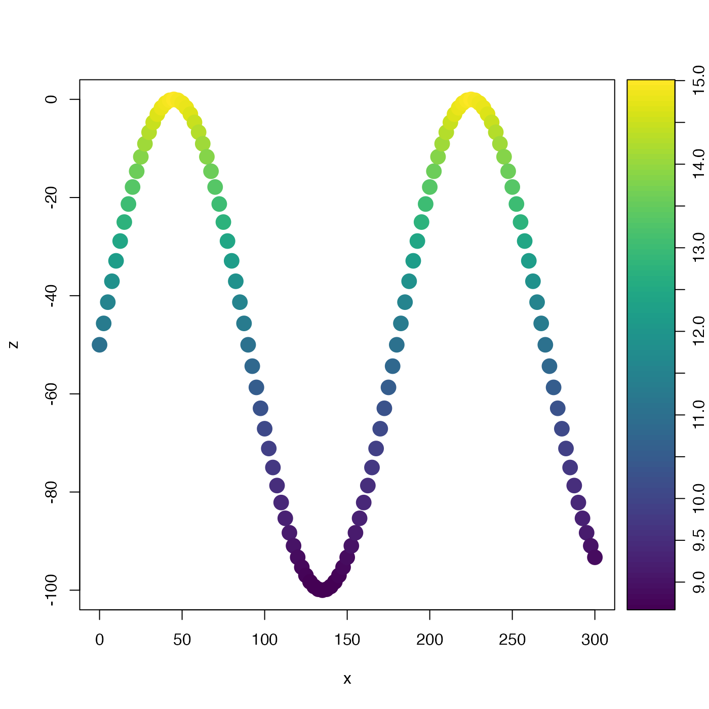

This is helpful in e.g. developing a color scale for an image plot. It is
not necessary that rlow be less than rhigh, and in fact
reversing them is a good way to get a reversed color scale for a plot.
Arguments
- x
a numeric vector.
- xlow
xvalue to correspond torlow. If not given, it will be calculated as the minimum value ofx- xhigh
xvalue to correspond torhigh. If not given, it will be calculated as the maximum value ofx- rlow
value of the result corresponding to
xequal toxlow.- rhigh
value of the result corresponding to
xequal toxhigh.- clip
logical, set to
TRUEto clip the result to the range spanned byrlowandrhigh.
Examples
library(oce)
# Fake tow-yow data
t <- seq(0, 600, 5)
x <- 0.5 * t
z <- 50 * (-1 + sin(2 * pi * t / 360))
T <- 5 + 10 * exp(z / 100)
palette <- oce.colorsViridis(100)
zlim <- range(T)
drawPalette(zlim = zlim, col = palette)
plot(x, z,
type = "p", pch = 20, cex = 3,
col = palette[rescale(T, xlow = zlim[1], xhigh = zlim[2], rlow = 1, rhigh = 100)]
)
